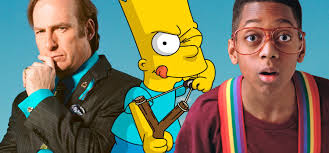

<!DOCTYPE html>
<html>

<head>
<title>Series de televisión</title>
<meta charset = 'utf-8'>

</head>
<link rel= 'stylesheet' type='text/css' href='../css/estilos.css'>
</html>

<h1 style = 'text-align:center;color:white;'> Historia</h1><center>
<div align="center"></div>
<body>

 

<h5 align="left">Una serie de televisión es una obra audiovisual que se difunde en emisiones televisuales, manteniendo cada una de ellas una unidad argumental en sí misma y con continuidad, al menos temática, entre los diferentes episodios que la integran. Las series televisivas pueden emitirse por temporadas o conjuntos de capítulos que pueden presentar o no una temática propia y paralela al argumento general de la serie. Aunque el término se emplea popularmente para designar a la ficción seriada, otros géneros son susceptibles de ofrecerse en serie, como el documental. No debe ser confundida con la película.</h5>
<h5 align="left">Durante mucho tiempo, los hombres creyeron que la Tierra estaba inmóvil en el centro del Universo y que todo el cielo se movía alrededor de la Estrella Polar.</h5>
<h5 align="left">Actualmente, todos vemos a diario </h5>
<h5 align="left">series de televisión, pero son muy pocos quienes conocen el origen de las mismas. ¿Alguna vez os habéis preguntado quién inventó las series de TV? Lo cierto es que el origen de las series se remonta a hace poco más de 50 años, por lo que son relativamente recientes. Llama muchísimo la atención el gran número de series que hay en la actualidad con apenas medio siglo de historia.</h5>

<h3>El origen de las series de televisión</h5>
<h5 align="left">Desde principios del siglo XX hasta los años 60 las emisiones radiofónicas cobraron una gran popularidad, familias de medio mundo se reunían alrededor de la radio para seguir las historias que a través de ellas se emitían. En los años 40 del siglo XX poco a poco se fue desarrollando el fenómeno televisivo, fue entonces cuando comenzó a desarrollarse la tecnología necesaria para grabar series y programas de televisión, los cuales se podían emitir más tarde. Toda una revolución para la época.</h5>
<h5 align="left">Fue a finales de los años 60 cuando las series de ficción comenzaron su verdadera andadura en Estados Unidos. Cadenas de TV como ABC o CBS, entre otras, emitían series de ficción que tenían cada vez más audiencia. En aquel entonces las series que se emitían en televisión tenían una trama muy sencilla y se buscaba que gustasen a todo el mundo.</h5>
<h5 align="left">La primera serie de éxito en Estados Unidos fue I Love Lucy, una sitcom que se emitió en la cadena CBS en la década de los 50 que durante cuatro temporadas fue la serie más vista de la televisión. Una vez I Love Lucyllegó a su fin, NBC apostó por Bonanza, una serie western con capítulos de 60 minutos de duración y cuya imagen ya era en color.</h5>
<h5 align="left">Por lo tanto, son I Love Lucy y Bonanza las dos primeras series de la historia. Todo un fenómeno televisivo que conquistó el corazón de millones de estadounidenses.</h5>
<div align="center"></div>
<h5 align="left">Ya en los años 70 la cadena CBS se animó a producir series más complejas como Mary Little More, una comedia que giraba en torno a una mujer divorciada que hacía todo lo posible por sacar adelante a sus hijos a pesar de las complicadas circunstancias que la rodean. Ya en 1972 apareció All in the Family, una serie que en tono de comedia que hablaba sobre la homosexualidad.</h5>

<ul>
<li><a href='../index.html'>Inicio</a></li>
</ul>

<ul>
<li><a href='curiosidades.html'>Curiosidades</a></li>
</ul>

<ul>
<li><a href='series.html'>Series</a></li>
</ul>
</body>
